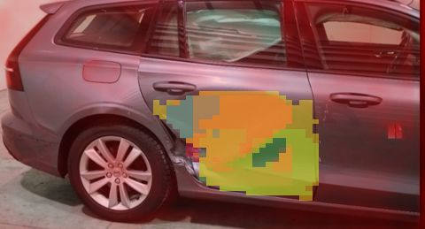

Condición (solo para el revisor): C3 · etiqueta controlada: SUSPICIOUS

En esta descripción, el vehículo presenta pequeños desconchados de pintura. La observación se refiere al vehículo.
SUPPORTED — SUPPORTED: 0.629 · SUSPICIOUS: 0.371 · INSUFFICIENT: 0.000
U = 0.659 (τU = 0.679) · c̄ = 0.750 (τc = 0.000)
| nodo | tipo | g | c,q,r,u |
|---|---|---|---|
| 0 | claim | 0.490 | [0.5, 1.0, 0.9899, 0.01] |
| 1 | source | 0.656 | [1.0, 0.656, 1.0, 0.0] |
| 2 | visual | 0.094 | [1.0, 0.6349, 0.3162, 0.5316] |
| 3 | visual | 0.079 | [1.0, 0.6276, 0.3162, 0.6012] |
| 4 | visual | 0.000 | [1.0, 0.5881, 0.3162, 0.9988] |
| 5 | visual | 0.009 | [1.0, 0.4403, 0.3162, 0.9385] |
| 6 | visual | 0.013 | [1.0, 0.3103, 0.3162, 0.8714] |
| 7 | forensic | 0.009 | [1.0, 0.656, 0.0708, 0.7951] |
| origen | destino | relación | peso g·p |
|---|---|---|---|
| 0 | 2 | support | 0.094 |
| 0 | 3 | support | 0.079 |
| 0 | 4 | support | 0.000 |
| 0 | 5 | support | 0.009 |
| 0 | 6 | support | 0.013 |
| 2 | 3 | overlap | 0.024 |
| 2 | 4 | overlap | 0.000 |
| 2 | 5 | overlap | 0.002 |
| 2 | 6 | overlap | 0.008 |
| 3 | 4 | overlap | 0.000 |
| 3 | 5 | overlap | 0.000 |
| 3 | 6 | overlap | 0.002 |
| 4 | 5 | overlap | 0.001 |
| 4 | 6 | overlap | 0.006 |
| 5 | 6 | overlap | 0.002 |